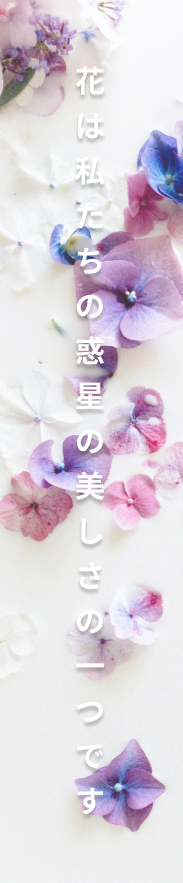

Bunga atau kembang (kata serapan dari bahasa Jawa: ꦏꦼꦩ꧀ꦧꦁ,
translit. kêmbang; bahasa Latin: flos) adalah alat reproduksi
seksual pada tumbuhan berbunga (divisio Magnoliophyta atau
Angiospermae, "tumbuhan berbiji tertutup"). Pada bunga
terdapat organ reproduksi, yaitu benang sari dan putik.
Bunga dapat muncul secara tunggal maupun bersama-sama
dalam satu rangkaian. Bunga yang muncul secara bersama-
sama disebut sebagai bunga majemuk atau inflorescence. Pada
beberapa spesies, bunga majemuk dapat dianggap awam
sebagai bunga (tunggal), misalnya pada Anthurium dan bunga
matahari. Satuan bunga yang menyusun bunga majemuk
disebut floret.